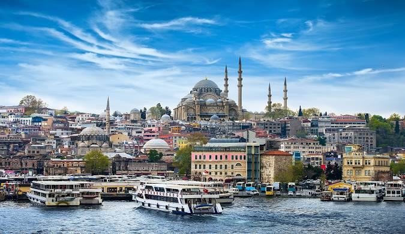
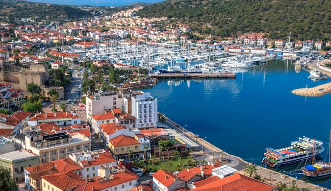
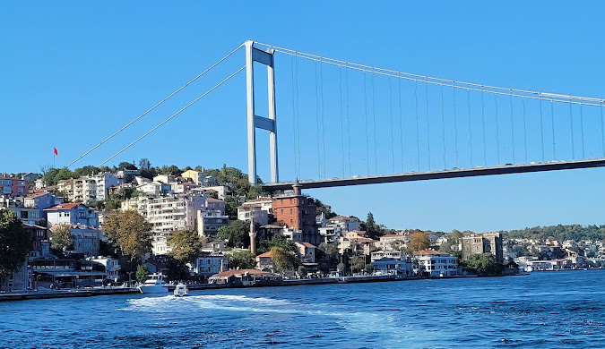
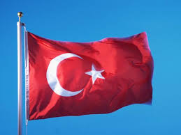
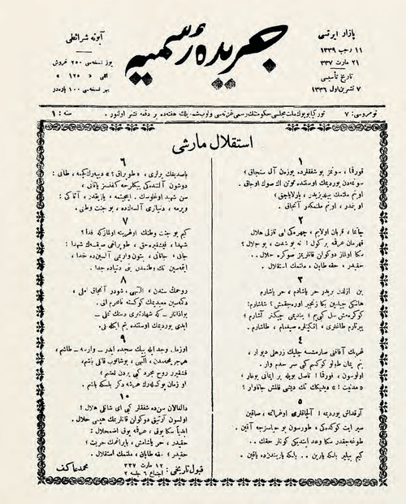

Туре́ччина (тур. Türkiye [ˈtyɾkije]), офіційна назва Туре́цька Респу́бліка (тур. Türkiye Cumhuriyeti [ˈtyɾkije d͡ʒumˈhuːɾijeti] ( прослухати)) — трансконтинентальна держава, розташована переважно в Азії. Східна Фракія, європейська частина Туреччини, відокремлена від Анатолії Мармуровим морем, Босфором і Дарданеллами (спільно відомі, як Турецькі/Чорноморські протоки). Столиця країни — Анкара. Найбільше місто країни Стамбул розташоване одночасно в Європі та Азії. Туреччина на своєму північному заході межує з Грецією та Болгарією; на півночі омивається Чорним морем; на північному сході межує з Грузією; на сході — з Вірменією, азербайджанським ексклавом Нахічеван та Іраном; на південному сході — з Іраком та Сирією; на півдні омивається Середземним морем; і на заході — Егейським морем. Близько 80 % громадян країни ідентифікують себе як турки, а курди є найбільшою національною меншиною, яка становить понад 16 % населення країни.Протягом історії землі сучасної Туреччини населяли численні народи, деяки з яких сформували визначні цивілізації: ассирійці, греки, фракійці, фригійці, урартяни, вірмени, сельджуки, османи.Сучасна Турецька Республіка постала 29 жовтня 1923 року після розпаду Османської імперії і війни за незалежність, очолюваної Мустафою Кемалем Ататюрком, який після проголошення незалежності стане першим президентом держави.Туреччина — країна-засновниця ООН, ранній член НАТО, МВФ та Світового банку, а також член-засновник ОЕСР, ОБСЄ, ОЧЕС, ОІС та G20. Ставши одним із перших членів Ради Європи в 1950 році, Туреччина стала асоційованим членом ЄЕС у 1963 році та вступила до Митного союзу ЄС у 1995 році. Тривалий час Туреччина прагнула стати частиною Європейського Союзу.Уперше подала заявку про членство у 1987 році, але їй тимчасово відмовили. Заявку на членство підтримали лише за 12 років. Кілька разів члени ЄС голосовуали за згортання перемовин з Туреччиною про вступ, які зрештою було остаточно припинено у 2021.Туреччина — світська, унітарна, раніше парламентська республіка, яка прийняла президентську систему правління після конституційного референдуму 2017 року; нова система набула чинності з президентськими виборами 2018 року, коли за новим державним устроєм президентом став Реджеп Тайїп Ердоган, котрий і досі обіймає цю посаду.
  Державні символи
-
Прапор країни
Прапор Туреччини (тур. Türk bayrağı) являє собою червоне полотнище з білим півмісяцем і зіркою на ньому. Прапор називають у народі Ал Байрак (Al Bayrak), тобто «яскраво-червоний прапор». Червоний колір турецького прапора бере початок від Умара, правителя Арабського халіфату в 634—644 роках і завойовника Палестини, Єгипту та Месопотамії. У XIV столітті червоний колір став кольором Османської імперії. Півмісяць із зіркою — символ ісламу. До моменту свого розпаду в 1918 році Османська імперія мала прапор, де на червоному полотнищі тричі повторювалося священне зображення білих півмісяця і п'ятикутної зірки. 1923 року запропоновано теперішній прапор Турецької Республіки, а 29 травня 1936 року його затверджено офіційно Законом про Прапор.
 -
Гімн країни
Марш Незалежності (тур. İstiklâl Marşı) є національним гімном Туреччини, офіційно прийнятий 12 березня 1921 року — на 2 роки раніше від встановлення Турецької Республіки. Написаний як мотиваційна музична сага для війська, що билося в турецькій війні за незалежність, і став гімном Республіки, яку належало створити.Слова написав Мехмет Акіф Ерсой (Mehmet Akif Ersoy), а мелодія належить Осману Зекі Унґьору (Osman Zeki Üngör). Темою твору є любов до рідної турецької землі, пожертва заради свободи й своєї віри, надія на краще майбутнє та відданість своїй нації.

Фізико-географічна характеристика
Туреччина розташована в місці, де з'єднуються дві частини світу — Європа й Азія. Характерна географічна особливість країни — її розташування на перехресті важливих водних, сухопутних і повітряних магістралей, що сполучають Європу з Азією, а чорноморські країни — з країнами Середземномор'я.
Туреччина простягається із заходу на схід приблизно на 1450 км, а з півночі на південь — на 480 км. Сухопутний кордон має довжину 2628 км, а берегова лінія — 7168 км. Європейська частина країни, площею 23,764 тис. км², межує на півночі з Болгарією, на заході з Грецією й омивається водами Чорного моря та протоки Босфор на північному сході, Мармуровим морем і протокою Дарданелли на південному сході, на півдні має вихід до Егейського моря. Азійська частина Туреччини, площею 755,688 тис. км², на півночі широким фронтом звернена до Чорного моря і межує з Грузією й далі на схід з Вірменією, на малому відтинку з Азербайджаном і з Іраном, а на півдні з Іраком і Сирією. Південні рубежі утворює Середземне море, західні — Егейське море.
Більша частина території Туреччини лежить у межах Анатолійського плоскогір'я (на заході) і Вірменського нагір'я (на сході). Переважають висоти від 800 м на заході до 2000 м на сході. На півночі розташовані Понтійські гори (до 3937 м), на півдні — хребти системи Тавра (до 3726 м). Найвища вершина Туреччини — згаслий вулкан Великий Арарат (5165 м) на Вірменському нагір'ї. Інші вулкани: Сюпхан, Немрут, Ерджіяс. У надрах країни залягають кам‘яне й буре вугілля, нафта, різні рудні копалини: залізо, свинець, цинк, марганець, ртуть, молібден. На частку Туреччини припадає 25 % загальносвітових запасів ртуті і сурми, 8 % — хромітів, 7 % — вольфрамових руд, 5,4 % — уранових, 4,2 % — мідних і т. д. Із нерудних корисних копалин є родовища селітри, сірки, кухонної солі. У горах Вірменського нагір'я беруть початок великі річки Тигр, Євфрат, Кура, Аракс. Основні річки Анатолійського плоскогір'я — Кизил-Ірмак, Сакар'я. На внутрішніх плоскогір'ях — великі безстічні солоні озера Ван і Туз. Переважають степи і напівпустелі.
Клімат Туреччини надзвичайно різноманітний. Центральна Туреччина — це континентальний клімат з холодною сніжною зимою й спекою влітку. На західному і південному узбережжі країни майже весь час тепло — субтропічний, середземноморський клімат. Купальний сезон на узбережжі Егейського і Середземного морів починається в квітні і закінчується в листопаді.На північному узбережжі країни морський клімат вологий і помірний. У західній половині випадає понад 1000 мм опадів на рік, у східній половині в середньому 2500 мм опадів на рік.Внутрішні райони Туреччини знаходяться в посушливій і слабо посушливій зонах помірного теплого кліматичного поясу, що дає можливість вирощувати пізні сорти зернових, озиму пшеницю, кукурудзу, соняшник, цукрові буряки, сою, виноград. Морське узбережжя розташоване в межах посушливої і частково вологої зони субтропічного кліматичного поясу, де можна вирощувати оливки, цитрусові, тютюн, чай, рис.Ґрунтовий покрив дуже різноманітний. Переважають гірські ґрунти (до 80 % поверхні), вони малопотужні та малородючі. Серед рівнинних ґрунтів слід назвати сіроземи, буроземи, червоноземи, каштанові ґрунти і солончаки. Сірі й бурі степові та пустельно-степові ґрунти, що переважають на плоскогір‘ї, сприятливі для випасання овець та кіз. Буроземи переважають у рівнинних і передгірських районах Західної Анатолії, на узбережжі Чорного й Середземного морів.
Історія
Історія сучасної Туреччини розпочалася 29 жовтня 1923 року, коли після війни за незалежність Мустафа Кемаль Ататюрк проголосив існування нової республіки. До цього на території сучасної Туреччини існувала Османська імперія, яка вважається її попередницею.Першим президентом Турецької Республіки став Мустафа Кемаль. Після ухвалення Закону «Про прізвища» у 1934 році Парламент Туреччини подарував йому прізвище «Ататюрк», що означає «батько турків». Першим прем'єр-міністром став Ісмет Іньоню. Він же став другим президентом Туреччини після смерті Ататюрка.Молода республіка була однопартійною президентською республікою, де діяла лише одна політична партія, заснована Мустафою Кемалем — CHP (Республіканська народна партія), яка продовжує свою діяльність і зараз. Після Другої світової війни влада дала зелене світло на створення інших політичних партії, після чого у 1946 році з'явилася Демократична Партія, очолювана Джелялем Баяром. Ця партія перемогла на парламентських виборах 1950 року, які завершили 27-річний період однопартійності. Джеляль Баяр став третім президентом Республіки, а прем'єр-міністром — Аднан Мендерес.У 1960 році в країні відбувся військовий переворот, в результаті якого Джеляль Баяр, Аднан Мендерес та інші політики постали перед військовим трибуналом, де їх звинувачували у державній зраді, розтраті державних коштів та зневазі до конституції. За результатами розгляду справи, прем'єр-міністра Адрана Мендереса, міністра іноземних справ Фатіха Рюштю Зорлу та міністра фінансів Хасана Полаткана було засуджено до страти, яка відбулася 16 вересня 1961 року на острові Імрали. У 1971 та 1980 роках Туреччина пережила ще два військові перевороти.У 1974 році Туреччина вторглася на Кіпр, окупувавши близько 40 % території острова, утворивши Турецьку Республіку Північного Кіпру, яку світові держави не визнають. До 1982, поки не була прийнята нова конституція, армія контролювала всі сфери держави, жорстоко придушуючи будь-яку політичну діяльність, що викликало міжнародну критику. З новою конституцією Туреччина змінила політичний устрій з президентської республіки на парламентську. У 1983, коли Тургут Озал став прем'єр-міністром, заборона на політичну діяльність була знята.У травні 2002 року у тодішнього прем'єр-міністра Туреччини Бюлента Еджевіта почалися проблеми зі здоров'ям, через що були оголошені дострокові вибори, які відбулися в листопаді того ж року. В них взяла участь створена у 2021 році Реджепом Таїпом Ердоганомпартія ПСР (Партія справедливості та розвитку). Сам він через судову заборону участі у виборах не брав. Відтоді аж до виборів 2024 року ПСР перемагала на всіх виборах. Реджеп Таїп Ердоган став прем'єр-міністром Туреччини у 2003 і відтоді є незмінним політичним лідером держави. Спершу він обіймав посаду прем'єр-міністра, що є головною політичною фігурою парламентської республіки, а з 2014 року — президента. Щоб знову сконцентрувати у своїх руках всю повноту влади, Ердоган провів через парламент, у якому ПСР мала конституційну більшість, зміни до конституції. У 2017 році в результаті референдуму щодо змін до конституції держава повернулася до президентської форми правління. Реджеп Таїп Ердоган донині є президентом Туреччини.Туреччина виступила на стороні коаліції ООН проти Іраку у війні в Перській затоці. Країна більше ніж 40 років веде боротьбу проти Робітничої Партії Курдистану, що визнана США та ЄС терористичною організацією.15 липня 2016 року в Туреччині була здійснена невдала спроба військового перевороту. Вдале перешкоджання військовим чинна влада записала на свій рахунок і спробувала символічно закарбувати цей день:
Населення
Населення Туреччини станом на 31 грудня 2023 року становить 85 мільйонів 372 тисячі 377 людей. Гендерний склад: 50,1 % — чоловіки, 49,9 % — жінки. Річний приріст населення становив у 2023 1,1 %, у 2022 — 7,1 %, тоді як у 2018 році цей показник був 14,7 %.
Кількість зареєстрованих іноземців знизилися з минулого року на 253 тисячі і нині становить 1 мільйон 570 тисяч 543 людини, 46,8 % з яких чоловіки, а 51,4 % — жінки. При цьому в Туреччині проживає 40483 українських громадянини (11 463 — чоловіки, 29 020 — жінки).
Найгустонаселенішими містами країни стали:
- Стамбул — 15,7 млн.
- Анкара — 5,8 млн.
- Ізмір — 4,5 млн.
- Бурса — 3,3 млн.
- Анталія — 2,7 млн.
Найбільші міста
- Стамбул- 15 655 924
- Анкара- 5 803 482
- Ізмір- 4 479 525
- Бурса- 3 214 571
- Анталія- 2 696 249
- Конья- 2 320 241
- Адана- 2 270 298
- Шанлиурфа- 2 213 964
- Газіантеп- 2 164 134
- Коджаелі- 2 102 907